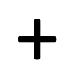

<!DOCTYPE html>
<html lang="en">

<head>
    <meta charset="utf-8">
    <meta http-equiv="X-UA-Compatible" content="IE=edge">
    <meta name="viewport" content="width=device-width, initial-scale=1">
	
	<script src="https://unpkg.com/jspsych@7.3.1"></script>
	<script src="https://unpkg.com/@jspsych/plugin-preload@1.1.2"></script>
	<script src="https://unpkg.com/@jspsych/plugin-html-keyboard-response@1.1.2"></script>
	
	<!-- Make sure that the plugin below has been built before using it. It's different to the current 
	extension. To build it, go to /plugin-meye-config and run npm run build -->
	<script src="../../plugin-meye-config/dist/index.browser.min.js"></script>
	<script src="../dist/index.browser.min.js"></script>
</head>

<body>
	<script>
	/* initialize jsPsych */
	var jsPsych = initJsPsych({
		extensions: [{type: jsPsychExtensionMeye}],
		on_finish: function() {	  
			jsPsych.data.displayData();
			jsPsych.data.get().localSave('csv','TESTDATA.csv');
		}
	});

	/* create timeline */
	var timeline = [];
	var participant_id = jsPsych.data.getURLVariable('ID');
	jsPsych.data.addProperties({participant: participant_id});

	var screen_width = window.screen.availHeight;
	jsPsych.data.addProperties({screenW: screen_width});

	var screen_height = window.screen.availWidth;
	jsPsych.data.addProperties({screenH: screen_height});

	/* preload images */
	var preload = {
		type: jsPsychPreload,
		images: ['../../plugin-meye-config/img/picture2.png', '../../plugin-meye-config/img/cross.png']
	};

	timeline.push(preload);

	var meyeCalibrate = {
		type: jsPsychMeyeConfig
	};

	const orientblue36 = {
		timeline:[
			{
				type: jsPsychHtmlKeyboardResponse,
				stimulus: '',
				trial_duration: 600, 
				response_ends_trial: false,
				extensions: [{ type: jsPsychExtensionMeye, params: {detection_interval: 100} }]
			},
			{
				type: jsPsychHtmlKeyboardResponse,
				stimulus: '<div></div>',
				trial_duration: 2000,
				data: { task: 'webcam1', US: 'no'},
				extensions: [{ type: jsPsychExtensionMeye, params: {detection_interval: 200} }]
			}
		]
	}

	var test_procedure = {
		timeline: [preload, meyeCalibrate, orientblue36]
	};
	
	timeline.push(test_procedure);
	jsPsych.run(timeline);
	
	</script>
</body>

</html>
